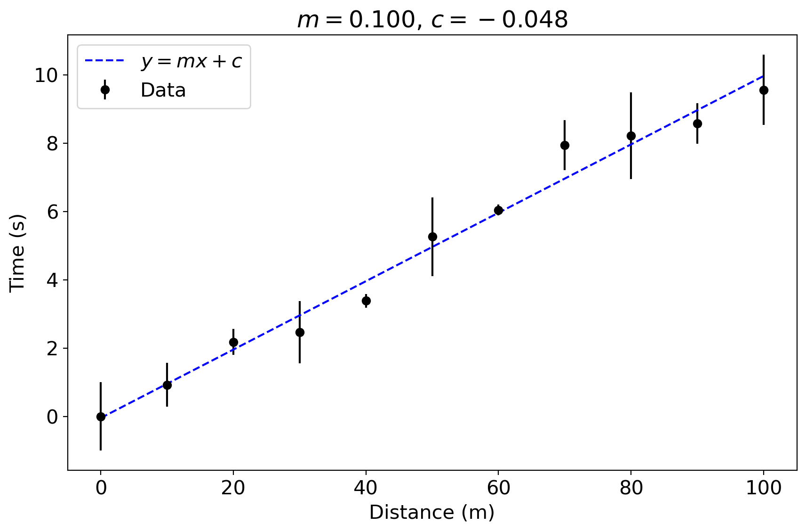

Solution: Calculate \(m\) and \(c\)#
From the equations for \(m\) and \(c\) in the worksheet:
N = len(bolt_df.time) ## we also need the number of points
m = ((N * sum_x_y) - (sum_x*sum_y))/((N * sum_x_2) - (sum_x)**2)
c = (sum_y - m*sum_x)/N
print(m,c)
0.10015849092636359 -0.04800871322726992
fig = plt.figure(figsize=(10,6))
ax = fig.add_subplot(1,1,1)
ax.errorbar(bolt_df.distance, bolt_df.time, yerr=bolt_df.err_time, color='k', marker='o', linestyle='None', label='Data')
ax.set_xlabel('Distance (m)')
ax.plot(bolt_df.distance, m*bolt_df.distance + c, color='blue', ls='--', label='$y = m x + c$')
ax.set_ylabel('Time (s)')
plt.legend()
title_string = "$m = {0:.3f}$, $c = {1:.3f}$".format(m, c)
ax.set_title(title_string)
plt.show()
